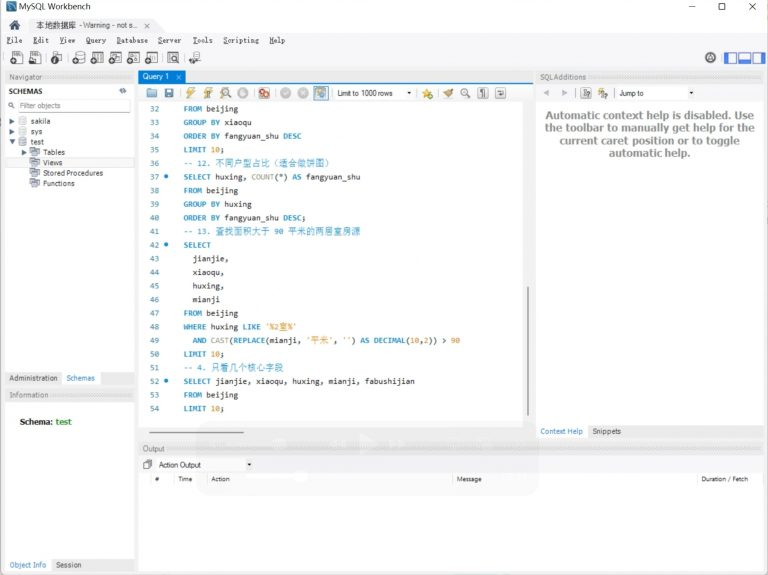

ChatExcel 深度对比：当自然语言遇上表格，它真的能打穿传统 BI 工具的护城河吗
从六段链路的完整闭环到 ChatDB 的无 SQL 数据库对话，ChatExcel 在 AI 表格工具这个赛道上走出了一条不太一样的路——我们把它放进同类坐标系里，看看它的差异化到底值不值得你换工具。
这个类目里，ChatExcel 排在什么位置
AI 表格工具这两年像雨后春笋一样冒出来。往小了说，是在 Excel 里加个 AI 插件帮你写公式；往大了说，是想用自然语言彻底替代 VLOOKUP 和数据透视表。但用过几款之后你会发现，大多数工具要么只解决了"做表"这一件事，要么就是接了个大模型 API 换皮。
ChatExcel 属于后者不太愿意承认的那一类——它不是单点功能增强，而是想把从原始数据到最终报告的整条链路都用 AI 重新跑一遍。这件事本身听起来就野心不小，所以它在 2025 年能拿到央视《赢在 AI+》智能办公赛道第一名、入选量子位创新 AI 100，倒也不是完全靠营销。
我之所以单独写它，是因为在同类工具里，它是少数几个能拿出"端到端流程"而不是"一个 AI 按钮"的产品。想了解它的完整六段链路和各模块能力，可以去chatexcel官网看看，或者直接从官方下载拿安装包试试手感。具体有啥不一样，往下说。
差异化一：六段链路的完整闭环，别家还在做单点
大部分 AI 表格工具的产品形态是这样的：打开 Excel/WPS → 点一下 AI 按钮 → 用自然语言描述需求 → AI 帮你生成公式或整理数据。到此为止。接下来你还得自己用 PivotTable 拉一下、自己做图表、自己导出 PDF、自己做汇报。
ChatExcel 的思路是把这条链拆成六段，每段都有对应的 AI 模块：
- AI 做表：原始数据进来，AI 帮你清洗、补全、结构化
- 对话处理：不用公式，直接问"上个月销售额前 10 的 SKU 是哪些"
- ChatDB：数据量大到 Excel 扛不住了，直接连数据库用自然语言查
- AI PPT：分析结果直接生成汇报，还能自动植入 SWOT、PDCA 这些商业框架
- AI Word / AI File Agent：输出环节的格式转换和文档生成
这条链最有意思的地方在于各模块之间是打通的。你用 ChatDB 查出一份销售数据，直接喂给 AI PPT 生成竞品分析，PPT 里自动把数据填进 SWOT 模型，最后用 File Agent 转成 PDF 归档。中间不需要你手动切文件、复制粘贴、调整格式。
这个闭环的价值在哪？举个真实场景：我之前帮朋友做过一次竞品分析报告，传统流程是从数据库导 CSV → Excel 清洗 → 手动做透视表 → 截图贴 PPT → 填 SWOT 框架 → 导出 PDF，全程大概三四个小时。如果用 ChatExcel 的链路，理论上就是"连 ChatDB → 说竞品分析的需求 → PPT 自动生成带 SWOT → 转 PDF"，中间环节省了大半。当然理论和实践之间还有差距，但思路完全不一样了。
差异化二：ChatDB 拆掉了 SQL 那堵墙
这是我觉得 ChatExcel 最锋利的一个杀招，也是同类工具很少碰的领域。

传统 Excel 对付几十万行数据就开始卡了，到百万行基本没法用。这时候你需要数据库。但数据库意味着 SQL，意味着 JOIN 语法、GROUP BY、子查询……对于非技术背景的职场人来说，这东西的学习曲线比 VLOOKUP 陡峭十倍。
ChatDB 做的事情是：你向 IT 要一个数据库只读账号，填好主机、端口、用户名、密码、数据库名这几项，之后就不用写一行 SQL 了。直接说"帮我查上个月华东区销售额超过 50 万的客户"，ChatDB 帮你翻译成 SQL、执行查询、把结果以表格形式返回。
这个功能的门槛其实没看起来那么低——不是把自然语言转成 SQL 就完事了。数据库有表结构、有索引、有权限控制、有多表关联，ChatDB 要处理的边界情况包括字段名模糊匹配、多表自动 JOIN、结果集过大时的分页建议等等。官方目前优先支持 MySQL，其他数据库的支持还在跟进中，具体连接参数和边界场景可以翻chatexcel文档里的 ChatDB 章节。
安全方面它也留了口子：建议用只读账号，金融医疗场景可以私有化部署让数据不出内网，这些都是实际能用起来而不是摆样子的设计。
它的取舍：为这些优势付出了什么
没有产品能两头占。ChatExcel 的优势也意味着几个明显的代价：
上手需要适应：如果你是 Excel 老用户，刚换过来会有点不习惯。VLOOKUP 写一个比说话快，但你得先想清楚这个场景该用"对话处理"还是"ChatDB"还是"AI 做表"。六段链路的灵活性反过来成了一种选择负担，初期可能需要摸索一下。
高级功能需要付费：基础的 AI 做表和对话处理应该是免费的，但 ChatDB 连接、AI PPT 批量生成、私有化部署这些企业级功能大概率是付费墙后面的。对于小团队或个人用户来说，可能没必要上全套。
平台依赖：它不是 Excel 插件，而是独立的网页端产品。这意味着你之前攒的 Excel 模板、宏脚本、VBA 代码用不上了，得迁移。而且目前网页端是优先平台，桌面客户端和移动端的体验还在完善中。
选购结论：什么样的人选它，什么样的人选别的
如果你属于下面这几类，ChatExcel 值得你花时间试试：
- 每天都要跟数据打交道的职场人：运营、财务、分析师、销售主管——高频的数据清洗、查询、汇报需求，六段链路的效率提升会很明显
- 团队里没有数据工程师，但业务数据已经冲破 Excel 天花板的中小团队：ChatDB 能让你在不招 DBA 的情况下用上数据库的查询能力
- 需要经常做汇报的管理者：AI PPT 自动植入 SWOT/PDCA/STAR 这些框架省下来的时间，可能比前面几项加起来还多
如果你只是偶尔用 Excel 做个简单表格、不会碰数据库、也很少做正式汇报，那 ChatExcel 可能对你来说太重了，传统 Excel/WPS 加个简单的 AI 插件就够用。还有一类人值得提一下：已经深度绑定 BI 工具的团队（比如全套 Power BI 或 Tableau），ChatExcel 不太可能替代它，但可以作为补充工具覆盖一些轻量级的快速分析场景。
最后说一句推荐：如果你还在用 Excel 做着本该交给数据库的事情，ChatExcel 值得你花一个下午试一下 ChatDB——这可能是你见过的把"数据查询"这件事的门槛降得最低的方式。 顺带一提，关于 ChatExcel 的使用资料，维护团队在 GitHub 放了一份，Gitee 上有镜像方便国内用户访问，GitCode 也做了同步备份。